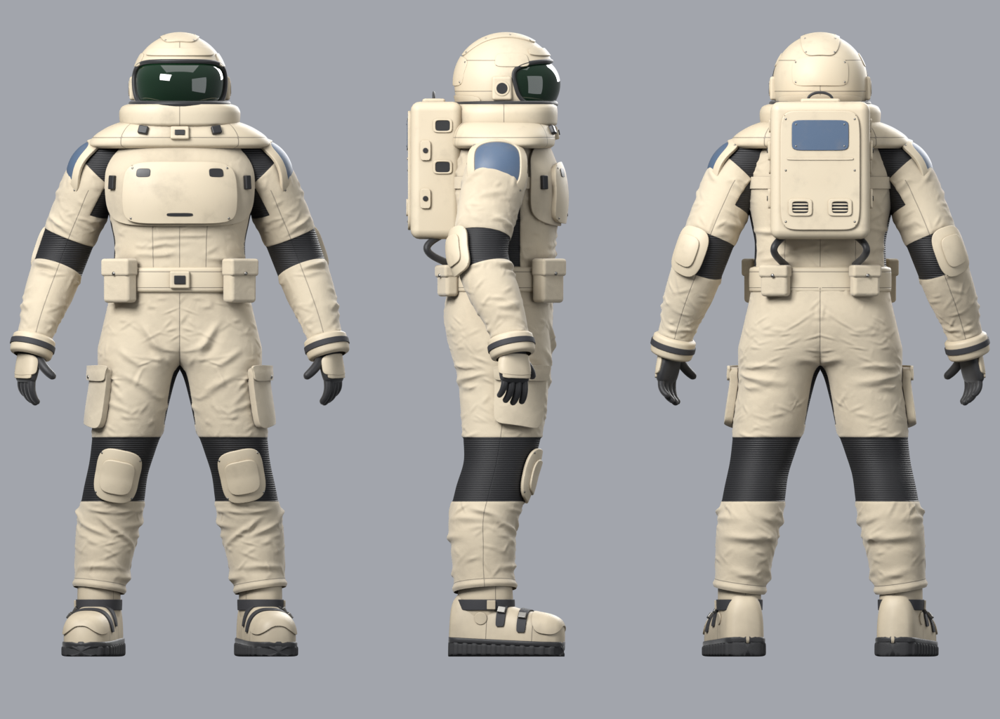
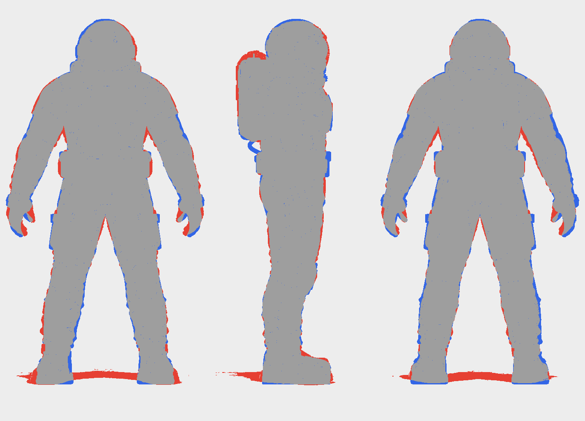
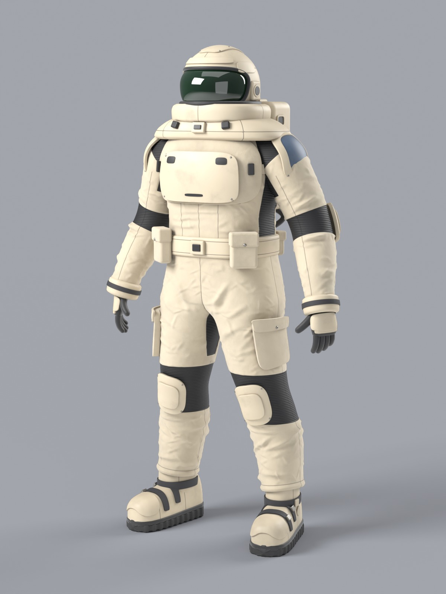
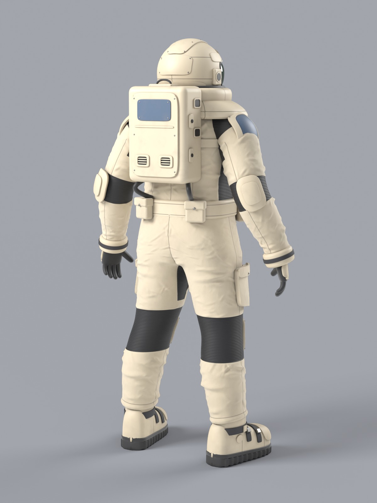
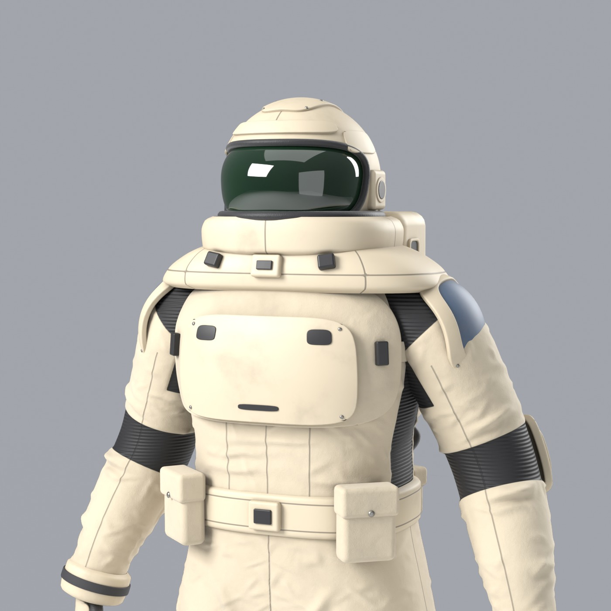
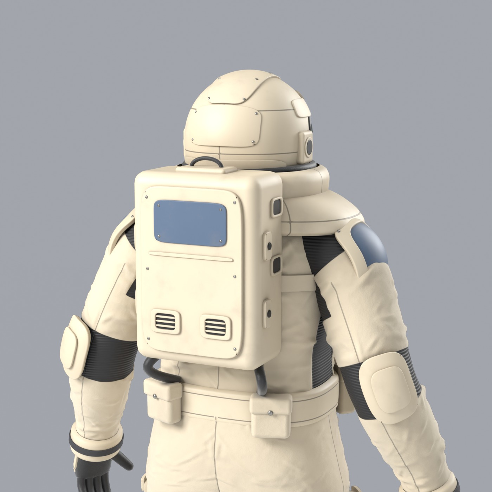
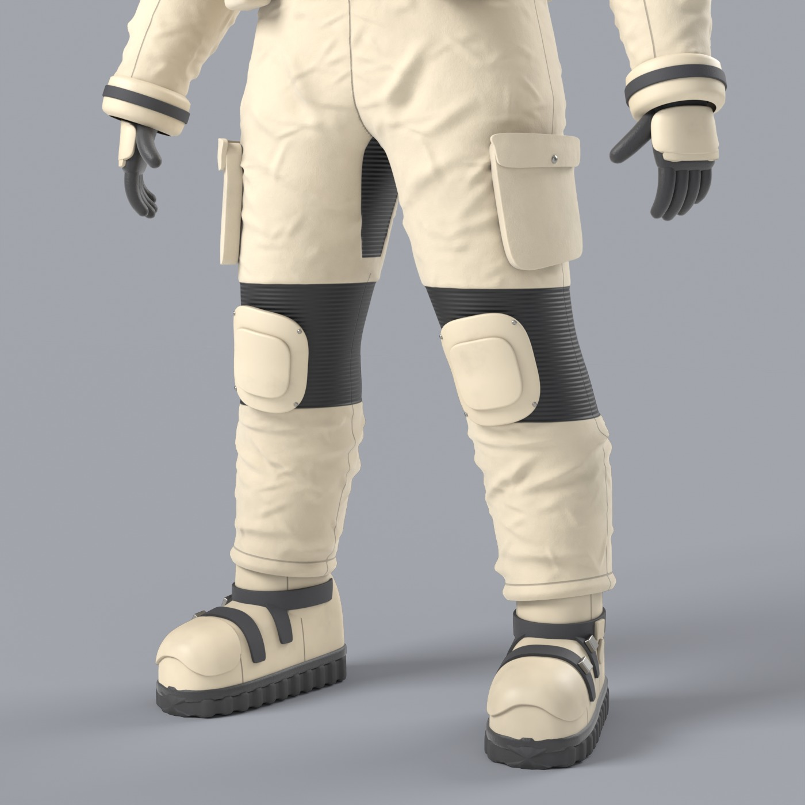
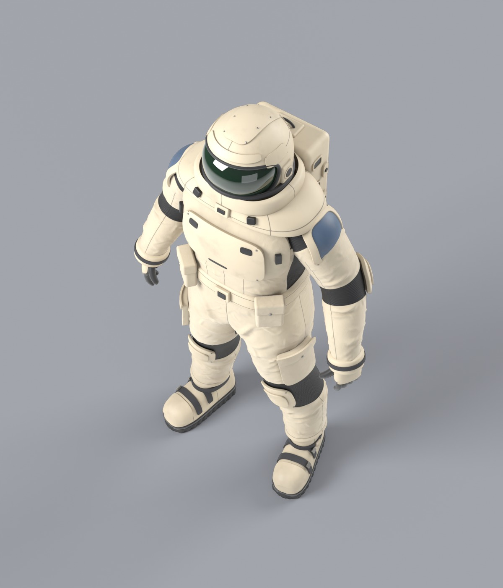
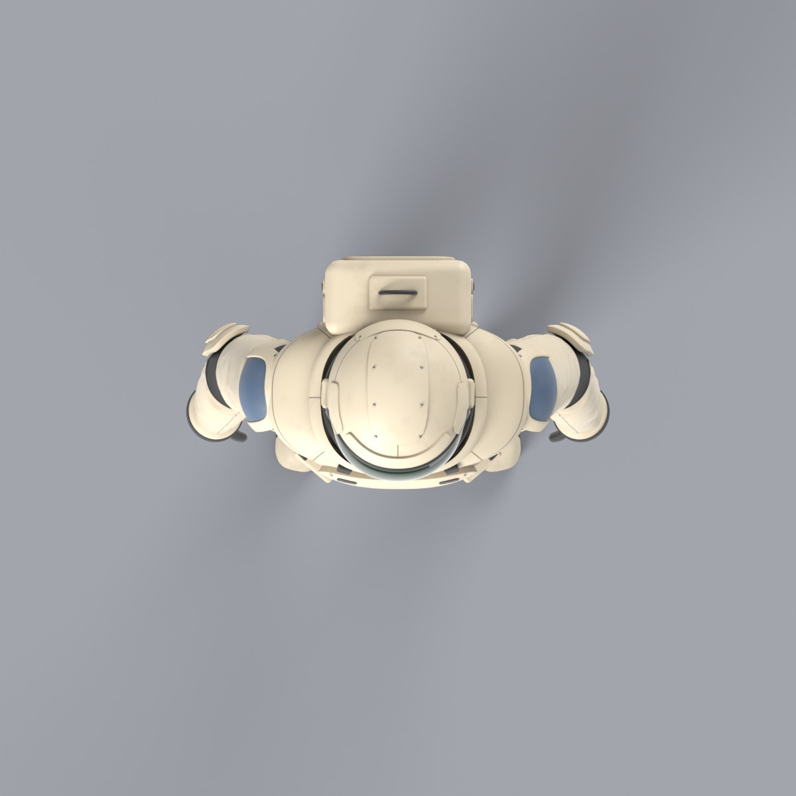

Space marine — scripted Blender model
Built from Python alone (scripts/build.py, Blender 4.5.10 LTS, Cycles). No sculpting, no downloaded
assets. Every image below is a render of the saved source/space_marine.blend.
Turnaround: artwork vs model
The model is re-shot with orthographic cameras in the reference sheet's own framing, so the two can be read row for row.



| View | Silhouette IoU |
|---|---|
| Front | 0.923 |
| Side | 0.937 |
| Back | 0.922 |
Studio views







What this is not yet
A high-resolution source model: 106 separate parts, about 0.69 M source / 1.64 M evaluated triangles. No UVs, no rig,
no skin weights, no export. Materials are procedural Cycles node graphs. See ../PROVENANCE.md.